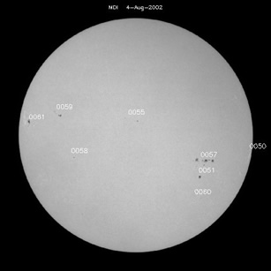

Credit: SOHO: The Sun Now/NASA.
The Wolf number, also known as the Zurich sunspot number, is a measurement of the daily solar activity. It is calculated using:
R = 10g + f
where g is the number of groups of sunspots and f is the number of individual spots. Since these numbers will vary depending on the observer’s location (and observing conditions), equipment and level of experience in identifying spots, an alternative form of the Wolf number is:
R=k(10g+f)
where k is a factor that attempts to account for the other variables in the measurement. Note that typical sunspot groups contain about 10 spots on average.
A more accurate daily sunspot number is calculated from a weighted average of sunspot numbers recorded at a series of observatories around the world. The International Sunspot Number is coordinated by the Sunspot Index Data Center in Belgium, while a second set of numbers is determined by the National Oceanic and Atmospheric Administration (NOAA) in the US.
This method of counting sunspot numbers was first introduced in 1848 by Johann Rudolph Wolf (1816-1893), who later became director of the Zurich Observatory.
See also: Sunspot cycle.